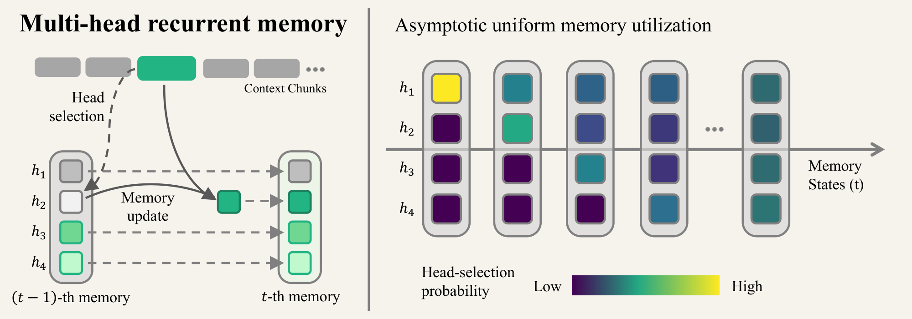
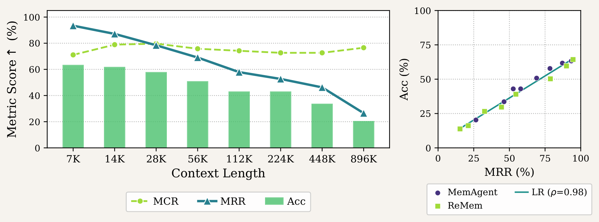
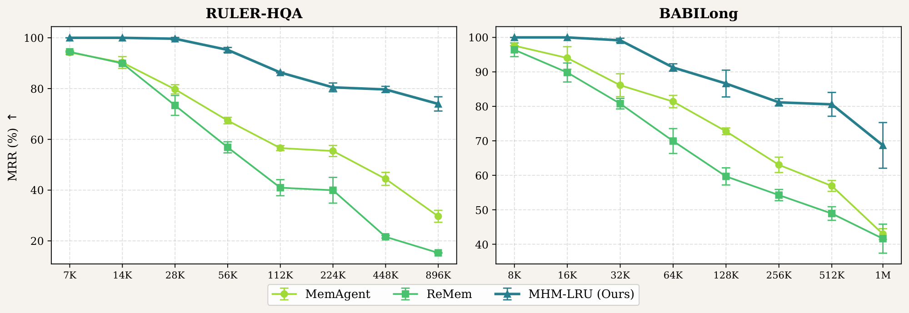
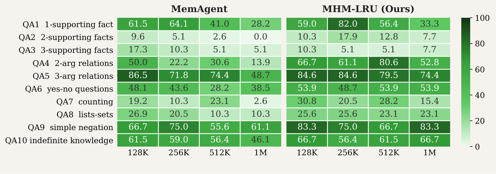
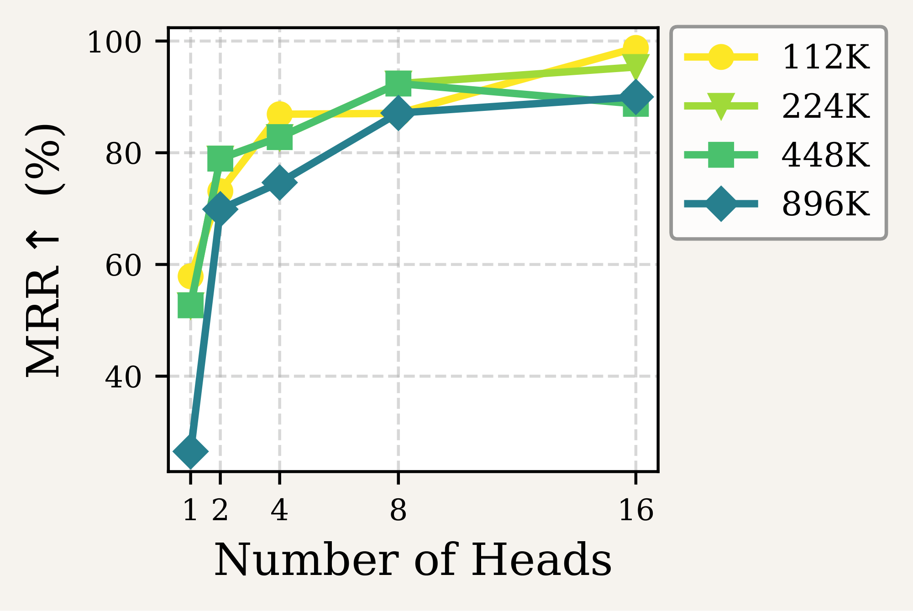
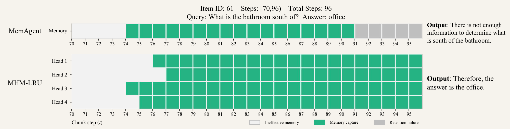

Long-context reasoning · Recurrent memory
Multi-Head Recurrent
Memory Agents
Department of Computer Science, University of Wisconsin–Madison
Select one head. Preserve the rest.
A training-free memory architecture for more reliable reasoning over long contexts.
RULER-HQA · 896K tokens
vs. <30% for both baselines
49.74% vs. 21.62% MemAgent
RULER-HQA · 896K tokens
Same capacity across methods
4 heads × 1,024 tokens for MHM-LRU
The big picture
Abstract
Recurrent memory agents extend LLMs to arbitrarily long contexts by iteratively consolidating input into a fixed-size memory window. Despite their scalability, these agents exhibit a well-documented reliability problem: end-to-end performance degrades systematically as context length grows. We diagnose this failure by decomposing performance into two factors—memory capture and memory retention—and quantitatively confirm that retention is the dominant bottleneck. Retention collapses because existing designs maintain memory as a monolithic text block, forcing every update to risk overwriting previously retained content. Motivated by this diagnosis, we propose Multi-Head Recurrent Memory (MHM), a general, training-free framework that partitions memory into independent heads governed by a stage-wise select-then-update strategy. At each step, exactly one head is selected for update while the remaining heads are structurally shielded from overwriting, shifting the burden of retention from model behavior to architectural design. As a lightweight instantiation, we introduce Least-Recently-Updated MHM (MHM-LRU), which guarantees uniform head utilization with zero additional token overhead. Extensive experiments on long-context benchmarks show that MHM-LRU substantially improves both retention and end-to-end accuracy across the 100K–1M token range, where baselines degrade sharply. On RULER-HQA at 896K tokens, MHM-LRU improves the memory retention rate from less than 30% to 73.96%. These gains generalize across model families, scales, and task types, positioning architectural optimization as a practical and cost-efficient path toward reliable long-context recurrent memory. Our code is available here.
01 / Diagnosis
The bottleneck is keeping what was found.
Recurrent agents compress incoming chunks into a fixed-size memory. As the sequence grows, useful information must survive more updates. The paper separates two sources of failure:
Was the answer ever in memory?
Memory capture rate measures the fraction of queries whose ground-truth answer appears in memory at least once during processing.
Did captured information survive?
Memory retention rate measures survival to the final memory state among queries where capture occurred. It is distinct from final-answer accuracy.


02 / Method
Read all heads. Write to one.
MHM splits memory into H independent text blocks. A selection stage chooses a head; the update stage receives the full memory, query, and current chunk, then rewrites only that head. The other H − 1 heads remain unchanged. A single-headed agent is the special case H = 1.
Least recently updated
MHM-LRU chooses the head that has gone longest without an update. Ties use the lowest head index. This rule distributes writes uniformly and needs no additional LLM call for selection.
Protect the unselected heads
The model can use information from every head to write the selected one. Protection is structural for unselected heads at each step; the method does not guarantee that every fact is retained forever.
Step 0: all heads start empty.
Illustration of the deterministic LRU schedule, not a live model run. No head is updated twice before every other head has been updated once.
03 / Evaluation
Better retention. Stronger long-context answers.
Main comparisons use Qwen2.5-14B-Instruct with 5,000-token input chunks and equal total memory capacity: 4,096 tokens for MemAgent, 2 × 2,048 for ReMem, and 4 × 1,024 for MHM-LRU. Recurrent methods report means and standard deviations over three independent runs.


End-to-end answer accuracy
Full results across evaluated context lengths. Higher is better; bold values indicate the best mean in each column.
| Method | 7K | 14K | 28K | 56K | 112K | 224K | 448K | 896K |
|---|---|---|---|---|---|---|---|---|
| LLM | 60.16 | 60.94 | 50.00 | 57.03 | 50.00 | 37.50 | 8.59 | 0.00 |
| MemAgent | 62.24± 0.97 | 60.94± 1.10 | 56.25± 2.21 | 50.52± 0.37 | 42.19± 0.64 | 42.97± 0.64 | 33.33± 0.98 | 21.62± 0.98 |
| ReMem | 64.32± 3.51 | 59.64± 0.98 | 50.26± 3.68 | 39.06± 2.78 | 29.68± 2.78 | 26.56± 1.69 | 16.14± 1.33 | 13.80± 0.97 |
| MHM-LRU | 66.86± 1.69 | 62.76± 1.47 | 59.64± 1.33 | 55.21± 1.33 | 50.26± 1.47 | 50.26± 2.57 | 48.70± 2.88 | 49.74± 1.47 |
Recurrent methods: mean ± standard deviation over three runs. LLM: native long-context backbone; no standard deviation reported. On narrow screens, scroll the table horizontally.
| Method | 8K | 16K | 32K | 64K | 128K | 256K | 512K | 1M |
|---|---|---|---|---|---|---|---|---|
| MemAgent | 58.85± 2.66 | 55.99± 2.58 | 53.39± 2.42 | 47.14± 0.98 | 44.66± 1.64 | 38.02± 2.88 | 32.55± 1.61 | 25.26± 0.97 |
| ReMem | 61.46± 2.41 | 55.21± 2.24 | 45.57± 1.61 | 42.19± 3.99 | 34.64± 2.42 | 32.29± 1.61 | 29.50± 0.26 | 24.48± 0.97 |
| MHM-LRU | 63.54± 1.60 | 60.94± 2.92 | 55.47± 1.27 | 51.82± 0.97 | 48.70± 3.27 | 47.39± 1.84 | 46.35± 2.66 | 41.41± 1.91 |
Recurrent methods: mean ± standard deviation over three runs. On narrow screens, scroll the table horizontally.
Evaluation and sampling details
RULER-HQA evaluates multi-hop question answering from 7K to 896K tokens in the reported tables. BABILong evaluates ten reasoning task types from 8K to 1M tokens, with 128 systematically sampled entries per length. Accuracy uses substring exact matching of normalized ground truth against the extracted final answer.
Decoding uses temperature 0.7 and top-p 0.95. The paper reports deployment with vLLM 0.15.0 on a Linux server with eight A100 GPUs. The runtime comparison below uses an NVIDIA A100 80GB with four parallel threads.
04 / Analysis
What drives the improvement?
Generalization across backbones
The retention benefit also appears with Qwen2.5-32B-Instruct and gpt-oss-120b in the evaluated 112K–896K range.
| Backbone | Method | 112K | 224K | 448K | 896K |
|---|---|---|---|---|---|
| gpt-oss-120b | MemAgent | 75.00 | 55.84 | 61.64 | 35.71 |
| gpt-oss-120b | MHM-LRU | 84.48 | 75.44 | 69.35 | 68.85 |
| Qwen2.5-32B | MemAgent | 84.04 | 87.63 | 88.54 | 78.02 |
| Qwen2.5-32B | MHM-LRU | 93.02 | 95.65 | 90.00 | 81.91 |


Stage-wise selection and routing
At 896K, merging head selection and writing into one model operation (MHM-Concur) lowers retention to 54.12% and accuracy to 33.59%, compared with 73.96% and 49.74% for MHM-LRU. Model-based relevance routing reaches 45.31% accuracy; its 74.71% retention is slightly higher than LRU at this length, but its capture rate is lower (67.97% versus 69.16%).
More heads: promising, with a capacity caveat
In the head-count ablation at 896K, retention rises from 26.53% with one head to 69.89% with two, 74.67% with four, and 87.12% with eight, before plateauing at sixteen. These are separate ablation measurements.

Capacity caveat: this ablation fixes the per-head generation limit at 1,024 tokens, so total memory capacity increases with head count. Unlike the main comparison, it does not isolate head count at a fixed total capacity.
Runtime and token costs
LRU selection adds no model inference or selection tokens. Actual total runtime and output-token costs still vary. At 112K, MHM-LRU takes 25.9 seconds per sample versus 31.5 for MemAgent. At 896K, it takes 239.1 seconds versus 224.9 (about 6.3% longer).
| Metric | Method | 7K | 112K | 896K |
|---|---|---|---|---|
| Seconds / sample | MemAgent | 2.8 | 31.5 | 224.9 |
| Seconds / sample | MHM-LRU | 1.9 | 25.9 | 239.1 |
| Output tokens / sample | MemAgent | 330.6 | 2834.4 | 18013.9 |
| Output tokens / sample | MHM-LRU | 142.8 | 1875.7 | 18085.5 |
Selected context lengths from the paper’s cost table. Tokens are generated output tokens per sample, not total input tokens.
A memory trajectory: preserving “office”
In the paper’s BABILong-512K QA4 example, the question is “What is the bathroom south of?” Both methods capture the answer, “office,” at step 74. MemAgent loses it during the final updates. MHM-LRU propagates it across heads, retains it through step 95, and answers correctly.


Scope and limitations
The experiments use a fixed number of heads. The best head allocation may depend on context length and task structure; adaptive allocation remains future work. The evaluated setting is query-specific long-context reasoning. Lifelong, query-agnostic memory and self-evolving agents are prospective directions, not demonstrated results.
Reference
Citation
BibTeX for the supplied manuscript.
@article{li2026multi,
title={Multi-Head Recurrent Memory Agents},
author={Li, Jiatong and Yeh, Samuel and Li, Sharon},
journal={arXiv preprint arXiv:2607.01523},
year={2026}
}